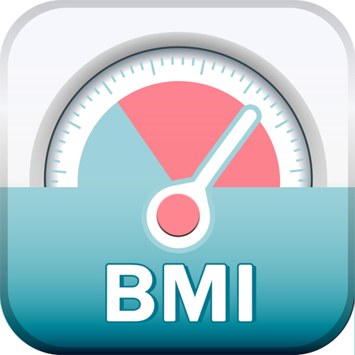

体重指数BMI即身体质量指数，是一个国际上。每一个怀疑自己体重是否达标的人都会关注BMI指数，对比自己身体的胖瘦程度与是否健康。
BMI计算器-体重指数BMI计算
身体质量指数 (Body Mass Index, 简称BMI, 亦称克托莱指数)， 是目前国际上常用的衡量人体胖瘦程度以及是否健康的一个标准。
|
BMI中国标准
|
BMI指数男女标准
什么是体重指数？
BMI指数（即身体质量指数，简称体质指数又称体重指数，英文为Body Mass Index，简称BMI）BMI或身体质量指数是找出您的体重是否超重、过轻或理想的快速方法。BMI可通过比较你的身高和体重立刻告诉您。马上就计算您的BMI！
体重指数是一种比较一个人体重和身高的统计指标。虽然它实际上并不测量身体脂肪的百分比，但它用于根据人的身高来估计健康的体重。BMI是确定您的体重是否在正常范围内，或者您是否体重不足，超重或肥胖的有用工具。
BMI计算器使用说明
输入你的身高和体重即可计算你的体重指数bmi，并根据你所选择的标准显示你的身体状况属于哪一类，还会为你推荐你的理想体重应该是多少千克(kg)。
本工具计算结果的身体状况所属分类及理想体重仅供参考，而实际的理想体重和所属分类要根据你的年龄、身体情况等进行综合判断。
关于BMI计算器
BMI计算器用于计算您的体重指数，并确定您的身高是否健康。 20岁及以上的成年人使用此计算器。
BMI公式
体重指数定义为个体的体重除以其身高的平方。
BMI可以使用公斤和米计算，公式如下：
BMI =（公斤重量）/ [（米高）x（米高）]
BMI也可以使用磅和英寸计算，使用以下公式：
BMI =（磅重）x 703 / [（以英寸为单位的高度）x（以英寸为单位的高度）]
BMI怎么算出来的？
BMI值原来的设计是一个用于公众健康研究的统计工具。当我们需要知道肥胖是否为某一疾病的致病原因时，我们可以把病人的身高及体重换算成BMI值，再找出其数值及病发率是否有线性关连。不过，随着科技进步，现时BMI值只是一个参考值。要真正量度病人是否肥胖，体脂肪率比BMI更准确、而腰围身高比又比体脂肪率好、但是最好的看法是看内脏脂肪(若内脏脂肪正常，就算腰围很大及体脂肪率很高，健康风险不高，日本相扑很多都是这种胖法)。因此，BMI的角色也慢慢改变，从医学上的用途，变为一般大众的纤体指标。BMI是Body Mass Index 的缩写，BMI中文是“体质指数”的意思，是以你的身高体重计算出来的。BMI是世界公认的一种评定肥胖程度的分级方法，世界卫生组织(WHO)也以BMI来对肥胖或超重进行定义。
看一个人是胖是瘦，不能只看体重，要看身高和体重的比例，这点相信没有人会反对。
BMI起初叫Quetelet指数，是19世纪初由比利时数学家、统计学家和社会学家Adolphe Quetelet提出来的。最初并不是为了研究肥胖问题，而是为了研究人体的生长发育。现在之所以叫BMI，是1972年美国生理学家Ancel Keys提出并改名的。
BMI的全称是Body Mass Index，中文译作身体质量指数，也称为身高体重指数。
BMI是怎么计算的呢？是取体重的千克数，除以身高（以米为单位）的平方，得到的数值即为BMI。
比如，你的身高1.75米，体重80千克，则你的BMI指数 = 80 / (1.75*1.75) = 26.1，对照上方的标准表可以看出属于超重了。
BMI不是万能的，不可过于迷信BMI！
BMI只是简单地将身高与体重按比例计算，虽然有用，但同时也有很大的局限性。
因为一个人的体重可以根据体脂的不同，肌肉和脂肪的比重大不相同，如果一个人的体重大多来源于脂肪，则可以判断这个人可能肥胖，但是如果体重多来自于肌肉，我们可能要唤作健美了。
另外一个问题是，BMI没有考虑人体骨骼、肌肉和脂肪的相对比例。事实上，骨骼比肌肉的密度大，比脂肪密度的更大，所以骨骼壮、肌肉结实、脂肪含量低的人BMI指数就会很高。这样一来，经常锻炼的人光用BMI指数就会错误地被归类为超重甚至肥胖。
所以我们可以借由BMI简单判断一下一个人的身体情况，但不可迷信BMI。